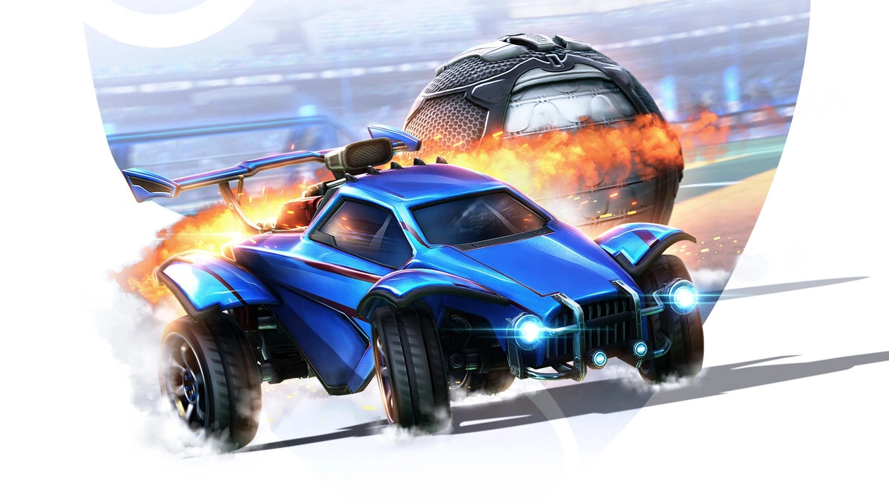

¿Còmo se juega?

Jugar a Rocket League es, en esencia, como jugar al fútbol, pero con coches propulsados por cohetes en una jaula gigante. La clave no es solo "correr", sino entender cómo usar la inercia, el salto y el Turbo para golpear el balón. Aquí tienes la guía básica de controles y mecánicas para ambas plataformas:
1. Conceptos Bàsicos de Juego
Antes de ir a los botones, debes conocer estas 3 reglas de oro:
- El Doble Salto: Si saltas y vuelves a presionar el botón de salto en el aire, harás un segundo impulso.
- El "Flip" (Esquiva): Si saltas y presionas el salto de nuevo mientras mueves el joystick o una tecla de dirección, el coche hará una voltereta. Esto sirve para ganar velocidad sin gastar turbo o para golpear el balón con fuerza.
- La Càmara de Balòn: Es vital. Cambia entre la cámara fija al frente del coche y la cámara que sigue siempre a la pelota. La mayoría de los jugadores usan la de balón el 90% del tiempo.
2. Controles en Mando (Recomendado)
La gran mayorìa de la comunidad (incluso en PC) prefiere el mando porque permite un control màs fluido y preciso de los àngulos de giro.
| Acciòn |
PlayStation (DualShock/Sense) |
Xbox / PC Controller |
| Acelerar |
R2 |
RT |
| Frenar / Reversa |
L2 |
LT |
| Saltar |
X |
A |
| Turbo (Boost) |
Circulo |
B |
| Derrape |
Cuadrado |
X |
| Càmara de Balòn |
Triàngulo |
Y |
| Rodar por el aire |
X despues X y lo das vuelta manteniendo L2 |
X (mientras saltas) |
Tip de Pro: Muchos jugadores cambian el Turbo al botón R1/RB y el Derrape al L1/LB para poder saltar y acelerar al mismo tiempo con más comodidad.
3. Controles en PC (Teclado y Ratòn)
Aunque es menos común, hay jugadores profesionales (como Yukeo) que demuestran que se puede ser una leyenda con teclado. El teclado es digital (o pulsas o no pulsas), por lo que no tienes puntos medios de giro.
| Acciòn |
Tecla |
| Acelerar |
W |
| Frenar / Reversa |
S |
| Girar Izquierda / Derecha |
A / D |
| Saltar |
Clic Derecho / Barra Especiadora |
| Turbo (Boost) |
Clic Izquierdo / Shift |
| Derrape |
Shift Izquierdo |
| Càmara de Balòn |
Barra Espaciadora / Espacio |
| Mirar atràs |
Clic de la rueda del ratòn |
4. Consejos para tus primeras partidas
- No persigas la pelota como un loco: Se llama "Ballchasing". Si todos tus compañeros están encima del balón, quédate un poco atrás para defender o esperar el rebote.
- Busca los pads de Turbo: Los círculos pequeños amarillos en el suelo te dan 12% de carga. Las esferas grandes en las esquinas te dan el 100%. Nunca te quedes sin turbo.
- Usa el entrenamiento: El juego tiene tutoriales básicos, intermedios y avanzados. Rocket League es un juego de memoria muscular; practicar 10 minutos antes de jugar marca la diferencia.
- Volar (Aerials): Para volar, debes saltar, inclinar la nariz del coche hacia arriba y mantener presionado el Turbo. ¡Es difícil al principio, pero así es como se ganan los partidos!